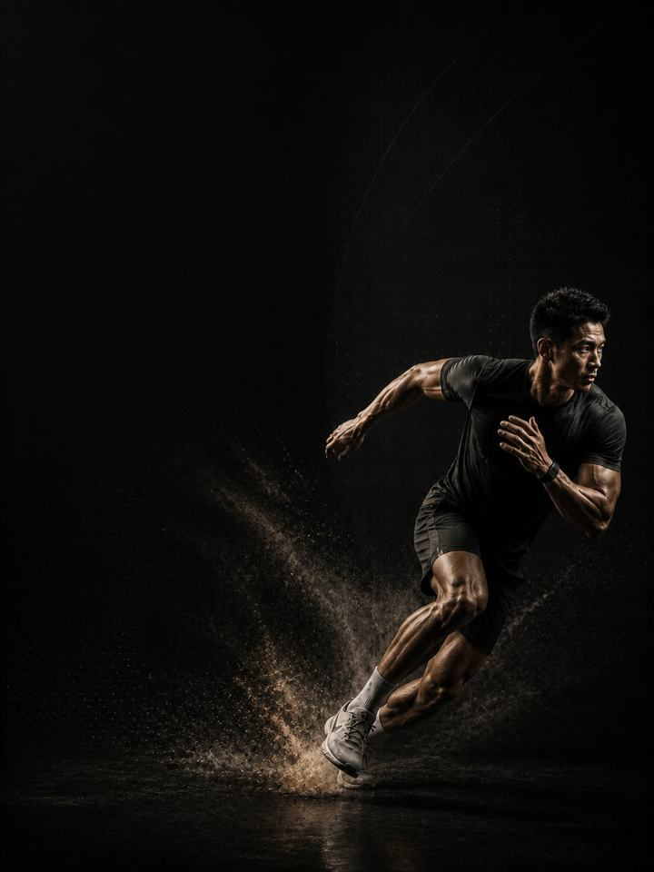

الحركة متعددة الاتجاهات · البناء
حوّل الأساس إلى تسارع وكبح وتغيير اتجاه تصمد كلها في الدقائق العشرين الأخيرة.
- مناسب لـلاعبي كرة القدم وكرة السلة وكرة اليد
- أيام التدريب3 أيام في النادي أسبوعيًا حول رياضتك، أو 2 داخل الموسم
- مدة الجلسة48–60 دقيقة
- المعداتنادٍ متكامل، مع كرة طبية وزلّاجة وأقماع إن توفّرت
- الصيغةملف PDF للهاتف، وكل تمرين مرتبط بفيديو توضيحي
لمن هذا البرنامج
للاعبي كرة القدم وكرة السلة وكرة اليد الذين بنوا أساسًا من القوة ويحتاجون الآن إلى استخدامه. رياضات الملاعب والصالات ليست سباقات تحمّل، وليست سباقات عَدْو. إنها مئات من التسارعات والتباطؤات وتغييرات الاتجاه القصيرة، تتكرّر تحت التعب. واللاعب الذي يخبو في الدقائق العشرين الأخيرة نادرًا ما يكون الأقل لياقة، بل هو الذي نفدت قدرته على التباطؤ.
الكتلة 1 بنت المحرّك، وهذه الكتلة تعلّمه أن ينطلق ويتوقّف ويستدير. تدرّب التسارع أولًا، والتباطؤ بقوة أكبر، وتغيير الاتجاه بتحكّم، ثم تكرّر الثلاثة وأنت متعب، فهناك تُحسم المباريات.
موقعها من السنة: الكتلة 2 من 4 في عائلة الحركة متعددة الاتجاهات: الأساس، ثم البناء، ثم المنافسة، ثم الاستشفاء، بهذا الترتيب. طبّقها بعد الحركة متعددة الاتجاهات · الأساس، في فترة ما قبل الموسم أو في المرحلة الأولى من تقويم المنافسات.
أسبوعك
ثلاثة أيام غير متتالية في النادي خارج الموسم. وداخل الموسم، اليومان 1 و2 فقط.
| الأحد | الاثنين | الثلاثاء | الأربعاء | الخميس | الجمعة | السبت | |
|---|---|---|---|---|---|---|---|
| خارج الموسم، 3 أيام | اليوم 1 | رياضتك | اليوم 2 | رياضتك | اليوم 3 | راحة | راحة |
| داخل الموسم، يومان | اليوم 1 | رياضتك | اليوم 2 | راحة | رياضتك | مباراة | راحة |
الجداول في ملف PDF مكتوبة لنسخة الـ3 أيام. داخل الموسم، لا تتمرّن أبدًا خلال 24 ساعة من مباراة، وحافظ على تمارين النوردي وكوبنهاغن كل أسبوع مهما حدث.
كل جلسة تسير بالطريقة نفسها:
- الإحماء، 8–10 دقائق. التسلسل نفسه في كل جلسة. تفعيل الأرداف والوركين والكتفين قبل أي حركة سريعة.
- السرعة والقدرة الانفجارية، 12–15 دقيقة. العَدْو وتغيير الاتجاه والقفزات والرميات، مع تعافٍ كامل بين المجموعات. وتتوقّف المجموعة لحظة انخفاض الجودة.
- القوة، 20–25 دقيقة. الرفعات المركّبة الثقيلة، مع دقيقتين إلى ثلاث دقائق بين المجموعات.
- تمارين الأنسجة، 8–10 دقائق. النوردي وكوبنهاغن والحمل. في النهاية، ولا تُحذف أبدًا.
السرعة تأتي أولًا في الجلسة، دائمًا. السرعة التي تُدرَّب وأنت متعب تصبح تمرين لياقة مع خطر إضافي. وتمارين الأنسجة تأتي في النهاية حتى تنجو من الجلسة المستعجلة.
كيف تتقدّم الأسابيع الـ12
السرعة في خط مستقيم هي الجزء السهل. ما يميّز اللاعبين هو مدى سرعة انطلاقهم، ومدى قوة توقّفهم، وهل يصمد أي منهما حتى الدقائق العشرين الأخيرة. يُحافَظ على القوة التي بُنيت في الكتلة 1 طوال الأسابيع الاثني عشر حتى لا تتسرّب، وتتغيّر تمارين السرعة كل أربعة أسابيع.
| الأسابيع 1–4 | الأسابيع 5–8 | الأسابيع 9–12 | |
|---|---|---|---|
| المرحلة | القوة الأفقية | القوة الارتدادية الجانبية | القدرة على تكرار الجهد |
| الهدف | قوة أكبر تُدفع في الأرض أثناء التسارع | قوة جانبية للكبح وإعادة التوجيه | سرعة تصمد تحت التعب |
| كيف تبدو | زلّاجة ثقيلة وانطلاقات قوية، وكل عَدْو ينتهي بتوقّف متحكَّم به | جري مكوكي ووثبات وعمل جانبي، مع قوة ثقيلة في الأساس | جهود قصوى قصيرة مع تعافٍ غير كامل |
| المجموعات الفعلية أسبوعيًا | 70 | 74 | 70 |
| متوسط الجهد | جهد 6.9/10، يتبقى نحو 3 تكرارات | جهد 7.5/10، يتبقى نحو 2.5 | جهد 7.1/10، يتبقى نحو 3 |
| مرات الهبوط أسبوعيًا | 52 | 140 | 64 |
| الرميات أسبوعيًا | 20 | 50 | 0 |
المرحلة في لمحة
المجموعات التدريبية أسبوعيًا حسب ما تدرّبه. الخط المتقطع هو مستوى الجهد.
موقع هذه المرحلة في السنة التدريبية
نفّذ المراحل الأربع بالترتيب لتكتمل سنة تدريبية كاملة.
الجهد (RPE) تقييم من 1 إلى 10 لمدى صعوبة المجموعة: «جهد 7/10» يعني أنه يتبقى في الخزان نحو 3 تكرارات. والمجموعات الفعلية لا تشمل الإحماء.
أسابيع التخفيف: الأسبوعان 6 و12 أخف. اقسم المجموعات على اثنين، وقلّل حجم العَدْو، وأبقِ الأوزان، ثم أعِد الاختبار وأنت مرتاح.
القواعد التي تجعله ينجح
- تمارين السرعة ليست تمارين لياقة أبدًا. العَدْو وتغيير الاتجاه والقفزات تحصل على تعافٍ كامل في الأسابيع 1–8: دقيقتان إلى ثلاث دقائق، في كل مرة. المرحلة 3 هي الوحيدة ذات الراحة القصيرة، وذلك مقصود ومحسوب الجرعة.
- كل عَدْو ينتهي بتوقّف. التباطؤ نصف الأثر التدريبي ومعظم الحماية من الإصابة. والعَدْو الذي ينتهي بانزلاق حتى التوقّف تكرار مهدَر.
- القوة تثبت، والسرعة ترتفع. تبقى الأوزان ثقيلة في الأسابيع 1–8، ويُحافَظ عليها في الأسابيع 9–12. هذه ليست الكتلة المناسبة لتحطيم أرقام الرفعات.
- الرياضة أولًا. في أسبوع مباريات ثقيل، احذف مجموعة، أو اختصر اليوم 3 إلى الإحماء وتمارين الأنسجة. النادي يخدم الرياضة.
- رقم القفزة أرخص اختبار للتعب. ثلاث وثبات طويلة من الثبات في بداية كل يوم 1، واحتفظ بأفضلها. إذا كانت أقل بأكثر من 10% من متوسطك المتحرّك، فخفّف ذلك اليوم: احذف تمارين القدرة الانفجارية ومجموعة واحدة من كل رفعة.
- احسب مرات الهبوط، لا المجموعات فقط. كل قفزة وحجلة ووثبة ونزول يُحسب، بما في ذلك قفزات الإحماء. أما الرميات والعَدْو والعبور الجانبي فوق الصندوق وخطوات التحفّز فلا تُحسب. أبقِ الأسبوع تحت نحو 150 هبوطًا في كتلة البناء، والتدريب الرياضي يُحسب فوق ذلك.
المصطلحات
- الكتلة التدريبية: 12 أسبوعًا. هذا البرنامج. تطوّر الكتلة الواحدة مجموعة واحدة من الصفات إلى مستوى محدّد.
- المرحلة (الدورة المتوسطة): 4 أسابيع. تستهدف كل منها صفة واحدة. وأربعة أسابيع اختيار لا قاعدة، فالمدة تتبع الهدف.
- الأسبوع التدريبي (الدورة الصغرى): حيث يرتفع الجهد، وتُضاف المجموعات، ويقع أسبوع التخفيف.
- السنة التدريبية (الدورة الكبرى): أربع كتل بالترتيب (الأساس، والبناء، والمنافسة، والاستشفاء)، نحو 48 أسبوعًا.
ما تدرّبه هذه الكتلة
-
التسارع صفة قائمة بذاتها. لا يكاد أي عَدْو في رياضات الملاعب يصل إلى السرعة القصوى. الخطوات الثلاث إلى الخمس الأولى تحسم المواجهة، وهي تعبير عن القوة: قوى كبيرة تُدفع في الأرض مع ميل قوي إلى الأمام. في البرنامج: دفع الزلّاجة الثقيلة، الانطلاق على المنحدر، رفع الركبة
-
التباطؤ هو النصف المفقود. التباطؤ يحمّل الجسم أكثر بكثير من التسارع، وفيه تقع معظم الإصابات التي تحدث بلا احتكاك. كل عَدْو هنا ينتهي بتوقّف ثابت. التوقّف هو التكرار. في البرنامج: العَدْو ثم التوقّف الثابت، الوثبات، العبور الجانبي فوق الصندوق
-
تغيير الاتجاه كبح ثم انطلاق من جديد. تغيير الاتجاه توقّف، ثم إعادة تموضع، ثم تسارع جديد، في أقل من نصف ثانية. درّب القطع الثلاث، فيصبح تغيير الاتجاه أكثر حدّة. في البرنامج: جري المكوك 5-10-5، الوثب الجانبي، سكوات القوزاق
-
التكرار مهارة منفصلة. أن تفعلها مرة واحدة هو الكتلة 1. وأن تفعلها أربعين مرة في تسعين دقيقة هو هذه الكتلة. القدرة على تكرار العَدْو تُدرَّب بجهود قصوى قصيرة مع تعافٍ غير كامل، لا بجري طويل بطيء. في البرنامج: مجموعات الجري المكوكي في الأسابيع 9–12
-
الحماية لا تتوقّف أبدًا. العضلات الخلفية للفخذ، والفخذ الداخلي، والسمانة، والكتف ما زالت مسؤولة عن معظم إصابات الهواة، ويرتفع الخطر تحديدًا حين ترتفع تمارين السرعة. في البرنامج: كل يوم 1، طوال الأسابيع الاثني عشر
كيف تقيس تقدّمك
تعيد الاختبار في أسبوعي التخفيف، 6 و12، فتُسجَّل الأرقام وأنت مرتاح. والوثب الطويل الأسبوعي يتابع التعب بينهما.
شكل التقدّم الجيد
- الأسابيع 1–4: تصبح الخطوات الثلاث الأولى أكثر حدّة، ويرتفع وزن الزلّاجة بسرعة.
- الأسابيع 5–8: تشعر بأن قدمك ثابتة في تغيير الاتجاه بدلًا من أن تنزلق، وينخفض زمن الجري المكوكي في الجهتين.
- الأسابيع 9–12: يتقلّص تراجع العَدْو، ولا تعود الدقائق العشرون الأخيرة من المباراة مختلفة عن أولها.
تكتمل الكتلة عندما: تكون أسرع في الانطلاق، وثابتًا في تغيير الاتجاه، وتراجع عَدْوك أصغر بفرق تستطيع قياسه. أفضل نتيجة ليست أسرع عَدْو منفرد، بل أصغر فرق بين عَدْوك الأول والأخير.
احترم أسبوعك
احسب كل شيء: المباريات، والتدريب الرياضي، والنادي، والنوم. القفزات المفاجئة في حمل التدريب الأسبوعي هي أكثر ما يتنبّأ بالإصابة موثوقيةً في رياضة الهواة. في أسبوع رياضي ثقيل، احذف جلسة في النادي أو قلّص تمارين القدرة الانفجارية، لكن لا تضحِّ أبدًا بالرياضة والتعافي معًا. واحمِ 7–9 ساعات من النوم، فهو أقوى أداة متاحة لتحسين الأداء، وأرخصها.
الأدلة العلمية
كل برنامج في المكتبة مبني على أبحاث منشورة، وقوة تلك الأبحاث مذكورة صراحةً لا ضمنًا. وحيث تكون الأدلة محدودة، تقول الصفحة ذلك.
| النتيجة | المصدر | ما لا تُظهره |
|---|---|---|
| تدريب القوة يخفض الإصابات الرياضية إلى أقل من ثلث معدلها في المجموعة الضابطة. أما الإطالة فلا تخفضها. | Lauersen, Bertelsen & Andersen, British Journal of Sports Medicine 2014. Meta-analysis of 25 RCTs, 26,610 participants. PMID 24100287 | نسبة الخطر 0.32 لتدريب القوة و0.96 للإطالة. تفاوتت التجارب كثيرًا، ولم تكن الجرعة موحّدة. |
| البرامج التي تتضمّن تمرين نورديك للعضلات الخلفية للفخذ تخفض إصابات العضلات الخلفية للفخذ إلى النصف تقريبًا. | van Dyk, Behan & Whiteley, British Journal of Sports Medicine 2019. Meta-analysis, 15 studies, 8,459 athletes. PMID 30808663 | نسبة الخطر 0.49، أو 0.55 بعد استبعاد الدراسات عالية خطر التحيّز. وهي تقيس البرامج التي تتضمّن التمرين، لا التمرين وحده. |
| تمرين واحد للعضلات الضامّة، ثلاث مرات أسبوعيًا قبل الموسم ومرة أسبوعيًا خلاله، خفض مشكلات الفخذ الداخلي المبلَّغ عنها بنسبة 41%. | Harøy et al., British Journal of Sports Medicine 2019. Cluster-randomised trial, 35 teams, 652 male footballers. PMID 29891614 | نسبة الأرجحية 0.59. البيانات مبلَّغ عنها ذاتيًا، وفي كرة القدم شبه الاحترافية للرجال فقط. ولم تُكرَّر بعد على النساء أو في رياضات أخرى. |
| أي وصفة تدريب معقولة أفضل من عدم التدريب. الأحمال الأثقل تحتل المرتبة الأعلى للقوة، والمجموعات المتعددة تحتل المرتبة الأعلى لحجم العضلات. | Currier, McLeod, Banfield et al., British Journal of Sports Medicine 2023. Network meta-analysis, 178 strength and 119 hypertrophy studies. PMID 37414459 | كانت الفروق بين الوصفات صغيرة، وكلها نجحت. |
ماذا بعد
بعد 12 أسبوعًا:
- الكتلة التالية: الحركة متعددة الاتجاهات · المنافسة
- منطقة واحدة تحتاج إلى عمل: السلسلة التصحيحية
قبل الشراء: احصل على موافقة طبية أولًا إذا
- كان لديك ألم في الصدر، أو ضيق تنفس غير معتاد، أو خفقان، أو دوخة أثناء المجهود.
- كان لديك ضغط دم مرتفع غير منضبط، أو مرض قلبي معروف، أو خضعت لعملية جراحية مؤخرًا.
- كنتِ حاملًا أو بعد الولادة بفترة قصيرة. احصلي على موافقة وبرنامج مخصص أولًا.
- كان لديك ألم حاد في مفصل واحد لا يهدأ. ابدأ ببرنامج أكسس التصحيحي المناسب.
هذا البرنامج إرشاد عام للياقة البدنية، ولا يغني عن التقييم الطبي.